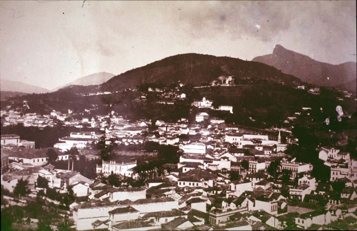

|
|  |
|
Anonymous, O Rio de Janeiro em 15 de novembro de 1889
|
A quite different imaginary juncture between new beginnings and colonial origins was constructed in Brazil following the military-republican overthrow of the monarchical state in 1889. November 15th, the day the liberal cabinet of prime minister Ouro Preto was ousted by military forces commanded by Marechal Deodoro da Fonseca, became an occasion of annual celebrations, even though it remains unclear until today whether Deodoro –a distinguished 'hero of the Paraguayan war'– had actually proclaimed Brazil a republic or merely agreed to unseat a cabinet with little sympathy for the armed forces. As Brazilian historian José Murilo de Carvalho has shown, in the aftermath of this rather peculiar 'revolution' (in which popular participation seems to have been close to non-existent) the various parties involved –the military apparatus under Deodoro, the more junior officers under Benjamin Constant Botelho de Magalhães, a professor at the Military Academy and one of the principal ambassadors of Comteian positivism, the republican politicians under Quintino Bocaiuva, and others– claimed ownership of the event (and thus the right to prominent positions in the new order of things) through a whole arsenal of written and visual memorials that included hymns and anthems, engravings in newspapers and journals, paintings and monuments. Just as parallel attempts in Argentina and Chile to inculcate patriotic sentiment into an 'apathic' public through rituals and images, Brazil´s new rulers (in many ways the same landholding elite previously in power, although with new class and regional allies) sought to awaken republican sentiments in popular sectors still nostalgic, if not openly loyal to, the old monarchy.
|